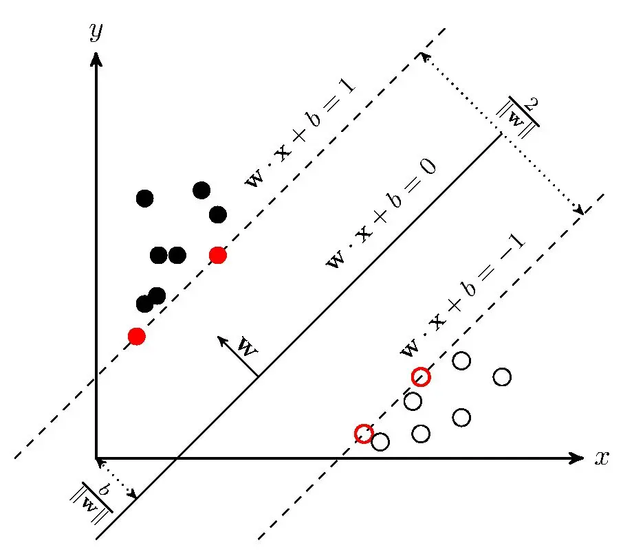

支持向量机(Support Vector Machines, SVM)
一些概念
-
超平面（hyperplane）：决策面，分类的决策边界，如图中黑色直线
-
支持向量（support vector）：距离超平面距离最近的样本点，如图中红色点
-
间隔（margin）：样本点到超平面的距离
下面这张图和本文并不对应，但可以辅助理解：

线性分类器
现有一个二分类问题，样本的类别标签为-1和1，一个线性分类模型可以表示如下（N个样本，省略了下标i）：
在线性分类器中，我们的任务是找到由 \(w\) 和 \(b\) 决定的合适的决策面，它可以很好的区分标签不同的两类样本点，分布在决策面一侧的样本点属于一个类别。显然，在两种不同类别的样本点之间的空隙中可以有很多的超平面，但这些超平面的表现并不总是让人满意。那么如何得到最佳的超平面呢
目标函数
如何得到最佳的决策面呢？我们引入支持向量和间隔的概念，最佳的决策面是支持向量到超平面的间隔尽可能大。
所以现在的我们的任务有两点（1）正确地区分各样本点（2）最大化间隔。
正确区分样本点用数学语言描述就是：
当标签为+1时，若满足上式，\(wx+b>0 \quad sgn(wx+b)=+1\)，模型输出和标签匹配。当标签为-1时，若满足上式，\(wx+b<0 \quad sgn(wx+b)=-1\)，模型输出同样和标签匹配。
在这种情况下，可能会出现支持向量十分接近，甚至刚好在决策面上的情形，而我们希望支持向量和决策面保有一定距离，故做简单调整为：
此时，决策面到支持向量必然存在一定距离，该距离即间隔。我们来求一下这个间隔，如图中所示，这一间隔是 \(wx+b=1\) 或 \(wx+b=-1\) 到决策面的距离，利用点到平面的距离公式，求决策面上的点到另一条直线的距离，可以解得间隔为 \(\frac{1}{||w||}\)。
最大化间隔，即最大化 \(\frac{1}{||w||}\)，也即最小化 \(||w||\)。
优化问题中，比较便于求解的形式是凸函数的最小化，我们转变求解的形式，将最小化 \(||w||\) 转变为最小化 \(||w||^2\)。
所以我们的问题是一个约束优化问题，在正确地区分各样本点的前提下最大化间隔，用数学公式描述为：
软间隔
回过头来看式2，它用于描述正确地区分各样本点的情形，但这种情形是非常理想化的，大多数情况下，我们无法找到一个完美的决策面来严格地区分正负样本点，从而让约束永远无法满足。空间中可能会有些点在另一个类别中，形成一种你中有我我中有你的样子。这时我们引入松弛向量 \(\xi\)，称为soft margin，来放宽限制。
但这时 \(\xi\) 的取值显然成了问题，\(\xi\) 可以取无穷大从而让所有所有样本点都能满足约束条件。基于此，我们给目标函数加上一个 \(\xi\) 的惩罚项 \(C\) 来限制 \(\xi\) 的大小，这里的 \(C\) 平衡 \(\xi\) 增大时，优化倾向哪边。约束优化问题被完善为：
优化问题求解
可以使用拉格朗日乘子法求解上述约束优化问题，将有约束的原始目标函数转换为无约束的新构造的拉格朗日目标函数（这里没有写 \(x, y, \xi, \alpha, \beta\)的下标），然后最大化 \(\alpha\) 和 \(\beta\)，最小化 \(w\) 和 \(\xi\)。
求导数为零的点，令
得
带入L化简得
最终问题为
继续化简约束条件并变为最小化问题，最终我们的问题转换为下面这个优化问题：
这时我们只用求解出最优的 \(\alpha\) 即可，此时 \(w\) 和 \(b\) 的解为式6：
非线性和核技巧
我们构建的分类函数是 \(f(x)=wx+b\)，现在我们把式6带入得：
观察式5，6以及现在的分类函数，这是现在我们求解需要的全部式子了，在它们里面有关 \(x\) 的项全部都是 \(x^Tx\) 这种内积的形式。这一特殊形式，让我们在处理非线性问题时，可以把这种内积的形式替换为核函数。
核函数是内积的一般化的形式，可以视作是另一个空间的内积：
REFERS
* 机器学习实战. Peter harrington. 人民邮电出版社. p89
* 支持向量机（SVM）——原理篇
* 猫都能看懂的SVM